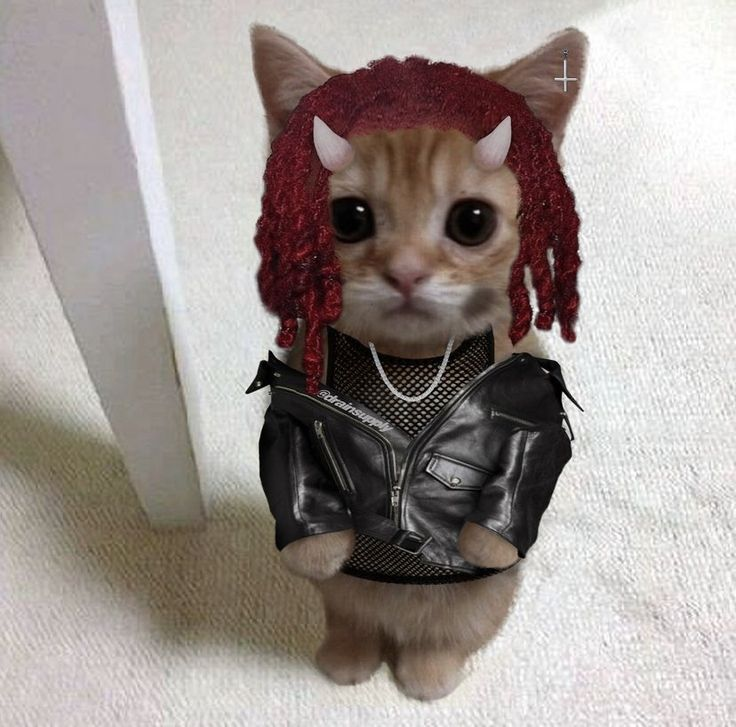

Zehan
† @zjhn †
Hello! I'm Zehan, I'm 20 y.o I can't do no Instagram no more (yeah) All the opps lookin' for me (what? What?) My brother said, "Jepem, what you tweakin' for?" (Yeah, yeah) "You got a whole army 'round you" (what?) Uh, bitch, I got some niggas ready to crash (yeah) New car, yeah, I push to dash (yeah) Push out that bitch and I smash (what? What?) Push out that bitch and I smash (what? What?) I'm so fuckin' high, I might crash (what? Crash, yeah) The drugs kickin' in real fast (what?) If I die, it's gon' be real sad (what?) So I fuck on my bitch like it's our last (what?) I'm a Rockstar, so I never can relax (bitch) We some Rockstars, we the new Black Flag (bitch) Try this Rockstar, put some money on your head (keep that) Put some money on your head (what? What? What?)